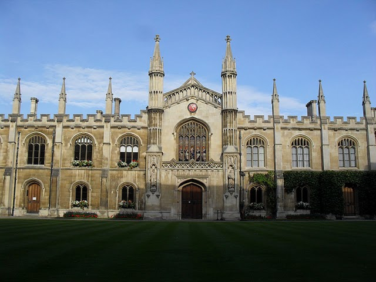

| Oxford University |
| BLACK FRIARS BRASENOSE COLLEGES Blackfriars is a Permanent Private Hall of the University of Oxford. Blackfriars houses three distinct | |
| ORAL COLLEGES Oral Roberts University is a Christian university located in Tulsa, | |
| LADY MARGARIN HALLINWIN COLLEGES Lady Irwin College is a constituent college for women, in the University of Delhi, under the memorandum of Association of The Lady Irwin College Society vide Regd. Society Registration Act 1860 (Punjab Amdmt.) 1957 Registration No.4163 (1969-70) & maintained by the Governing Body & UGC Grants. Lady Irwin College is a premiere institution affiliated to University of Delhi for Undergraduate and Postgraduate education in Home Science. It also supports doctoral programs in five areas of Home Science. Other programmes are two year B.Ed. (for students of Home Science), B.Ed. Special Education MR (for students from all streams) and one year Postgraduate Diploma in Dietetics & Public Health Nutrition. | |
| JESUS COLLEGES JMC, partnering in the vision of Christ, makes its contribution to the creation of a just, humane and inclusive society on earth through providing transformative education. We accompany and mentor our students so that they develop as women of competence, compassion and conscience, and empowered with ignited minds and hearts, pursue the goal of transformation of our society. Enable our students to realize their potential and self-worth so that they evolve as leaders and transforming agents who make a significant contribution in all spheres of national and global life. | |
|  | CHRIST CHURCH CORPUS CHRISTI COLLEGES Corpus Christi College (formally, Corpus Christi College in the University of Oxford; informally abbreviated as Corpus or CCC) is one of the constituent colleges of the University of Oxford in the United Kingdom. Founded in 1517, it is the 12th oldest college in Oxford. The college, situated on Merton Street between Merton College and Christ Church, is one of the smallest in Oxford by student population, having around 250 undergraduates and 90 graduates. It is academic by Oxford standards, averaging in the top half of the university's informal ranking system, the Norrington Table, in recent years, and coming second in 2009–1 |
 |